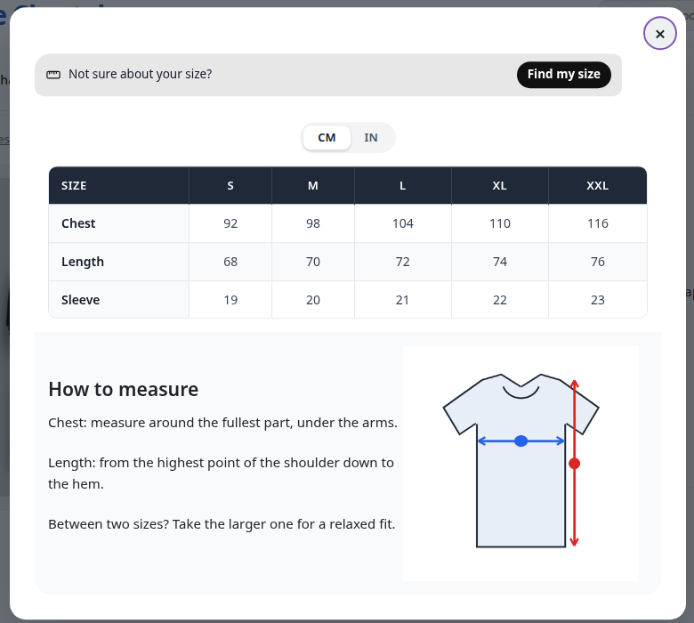

This page shows how your charts look on the product page.

A popup chart open on a product page, with a table and a How to measure section.
In the General tab you choose how the chart shows. With Popup, a button opens the chart in a window. With Page, the chart is shown directly on the product page with a heading. See Your first size chart.
In the Popup Button tab, set Location to Next to a page element and enter a CSS selector. The button is then placed next to that element on the page.
You can place a chart with a shortcode:
[ilm_size_chart] shows the chart of the product on the current page.[ilm_size_chart product="123"] shows the chart for a product, where 123 is the product ID.The plugin works with classic themes and block (full-site editing) themes.
The chart editor loads Google fonts for the preview. On the shop pages, the plugin does not load these fonts. The chart shows the font only if your theme already loads it. Otherwise the visitor's browser uses the fallback font.